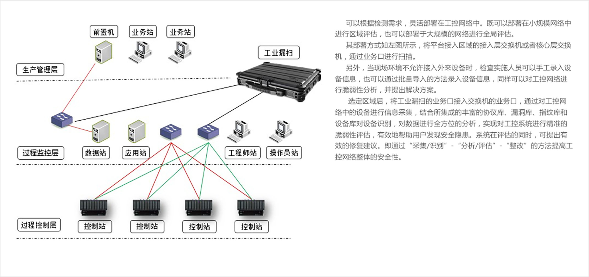

工业漏扫
强大工业漏洞库 · 高性能检测引擎
产品亮点
PRODUCT HIGHLIGHTS
高准确率、低误报率的工业威胁检测
系统由协议库、指纹库、漏洞库、设备库组成工控知识库；
覆盖近30余种工控协议，掌握超过一百个型号的设备指纹；
可录入千余种型号的设备，在此技术基础上，可检测 超过千条工控漏洞。
无损扫描，速度可控
发送无损探测包，智能匹配设备漏洞，实现对 工控系统在线扫描；
可根据工控系统的健壮性调整扫描速率，在保 证工控系统安全运行的前提下，达到最高效率的 检测。
安全加固
系统经过安全加固，并通过安全性检验，排除了 因检测设备接入而给工控网络带来威胁的可能性。
模块化设计
模块化设计，可根据用户需求，以国家和行业规范为依 据，扩展检测功能，以适应更多的评估环境，达到对检测 对象实施无死角分析。
多方式，多场景
提供自动扫描、手动录入和信息导入三种方式 进行设备录入及漏洞检测；
用户可以根据工控现场环境及实际需求选择相 应的检测方式。
详细的检测报告
自动生成、可定制模板、提供漏洞解决方案、可 编辑的word格式。
产品功能
Product FEATURES
资产管理
通过自动或手动方式采集工控系统信息后，可对信息进行查找和编辑，进一步完善系统信息。
漏洞探测
可对工控系统进行一键式漏洞扫描，并展示漏洞详细信息，包含漏洞威胁分数和漏洞的六个风险域的量化分数。
端口扫描
用户可以根据需要设置扫描目标的端口范围，扫描结果会以端口开启情况和服务开启的情况展示。
统计分析
采用饼状图、柱状图、雷达图等方式，从设备、漏洞和协议等多维度进行可视化展示工控网络资产风险分布情况。
整改建议
针对设备存在的漏洞和开放的不必要的服务提出修复建议，提高系统安全性。
用户管理
根据三权分立原则，用户分为系统管理员、操作员和安全审计员，不同角色之间的权限无重叠。
定制报表
提供检测报告模板，可高度自定义报告的内容，并可导出word格式报告，以方便修改。
应用场景
APPLICATION SCENARIO
智能制造企业
